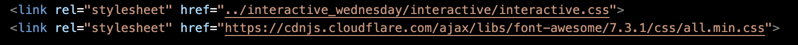
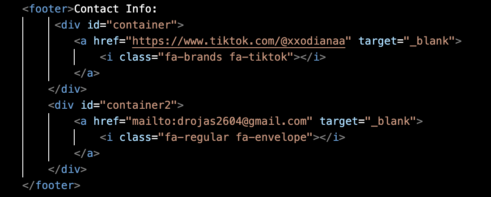

This week has been a learning process through trail and error as well as discovering new and more efficent ways of getting something done. For example, when I was finished with creating a functional navigation bar for each page I hated how boring and typical the font and color was. I had remembered declaring elements as classes from a previous course I had taken a long time ago and began revisiting those lesson subjects and managed to at least change the font size on my index page. As for the other pages I will continue to figure out how to apply those same changes to keep things consistent. I also really want to add a fun gallery where it sort of hovers! I remember doing a project with those features but again very long ago I'm excited to revisit and grow more confident through seeing my progress in this visual diary!

I'm having such a hard time attaching the CSS to every file to maintain consistency. I'm first trying to fill in my navigation bar with another color to then add padding but i'm afaid my body selector is overriding that.
When I first opened my public site I received a 404 page not found error and began to crumble assuming this was the easiest part of making websites. I read the error which said something regarding an index file which I did not have. Rather I had all of my assignments and pages kept in their own folders so I then separated my interactive.html and renamed it index.html and had to go back to all of my pages to update that. To my luck, it still didn’t work. I then was told that my files weren’t actually uploaded on to GitHub🤦🏻♀️.So I successfully uploaded them and voila it was now launched! However, my page-two site remains hidden and I must insert it into a new folder and hopefully that’ll do the trick. Overall, I learned the sensitivity of file names and how chaotic file architecture becomes when dealing with multiple pages and has given me a sense of both caution and patience.
At first glance of my original entry page I knew I was happy with the overall vibe but I knew it could still benefit from some additional elements. I reflected on my original sketch of what I wanted and decided to add an icon linking to my tiktok and gmail. I researched how to implement one and was introduced to the platform Font Awesome. I watched some tutorials and tackled it and was to my surprise successful. I then took what I learned about id selectors and the display property and placed the logos horizontally with gaps in between inside my footer and external style sheet. I also did this with my About Page because that’s where I felt it was most appropriate to include due to my description of my tiktok portfolio. Additionally I added padding to my p tag content to fit the page much nicer and I also added a dashed border to all of my titles. Another fun element I learned to manipulate was adding soft corners to my rough draft image. I think soft edges make the image look better and I achieved this by adding a small border radius in my css. I tried to do the same with my video on my About Page but it made the gap between the nav bar and the video disappear which I didn’t like. I will continue to try and make it happen but for my own sanity I gave it up for now. As my interactive sketchbook grows, I want to implement a dropdown menu that contains all of the assignments in a submenu in order to keep my sites organized. I also want to add a gallery of something that represents me as well as more icons, maybe even design my own. As of right now I think the page that needs adjusting is my inspo page, I believe certain modifications haven't been showing up because It has its own stylesheet overriding certain things but that’s for a later fix.

